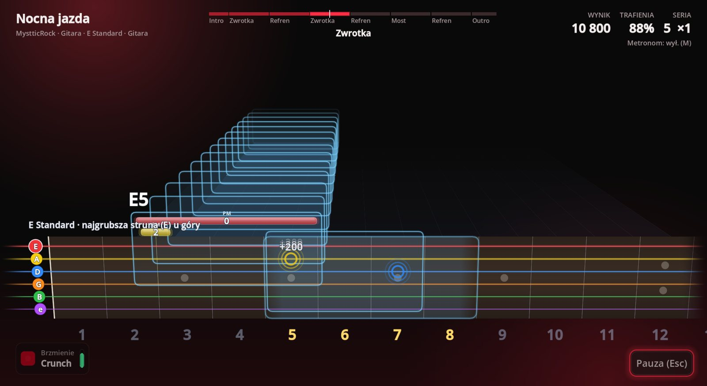
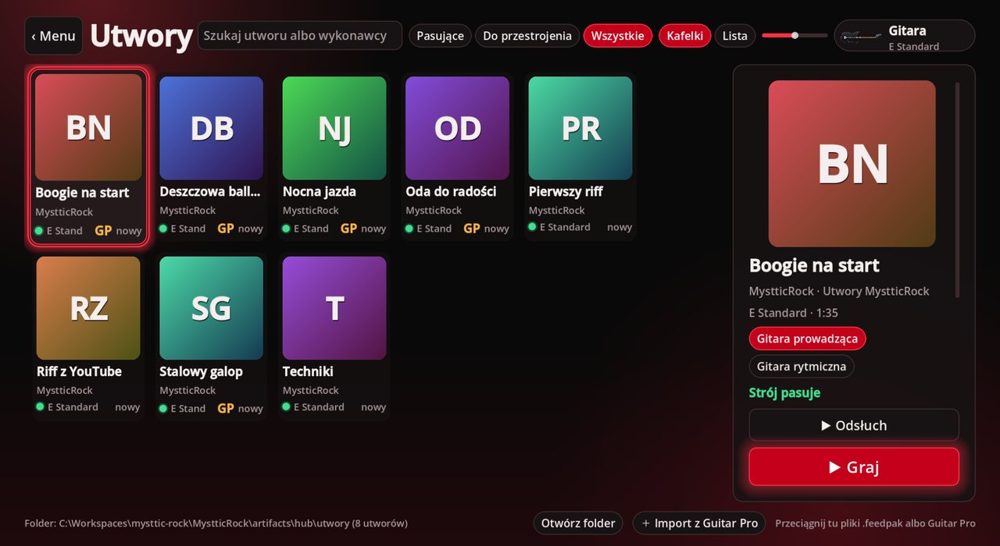
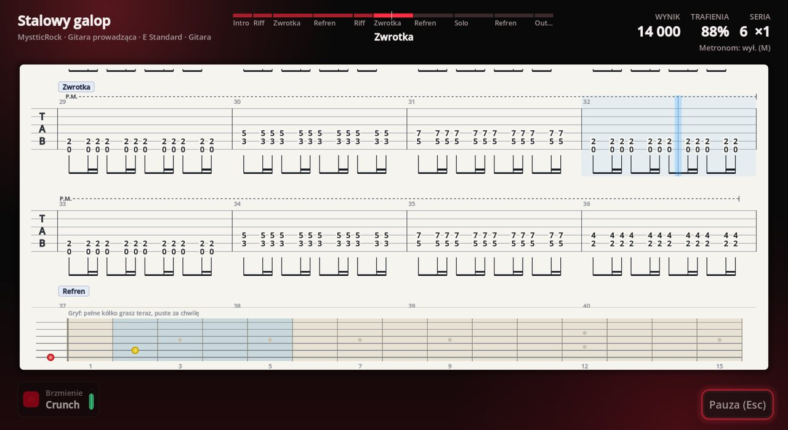
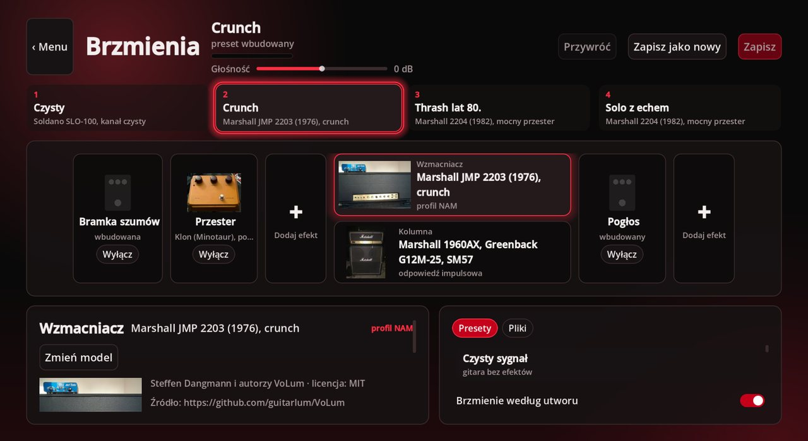
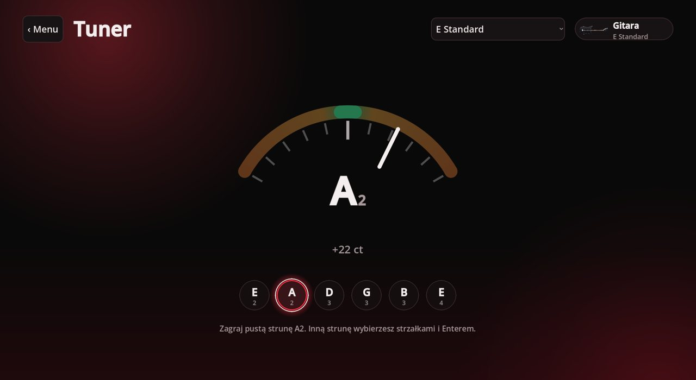
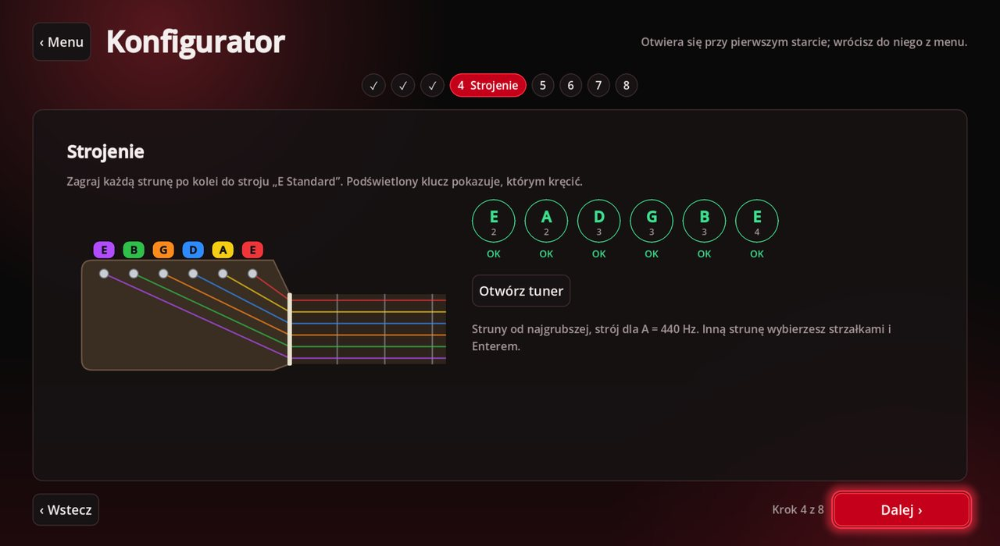
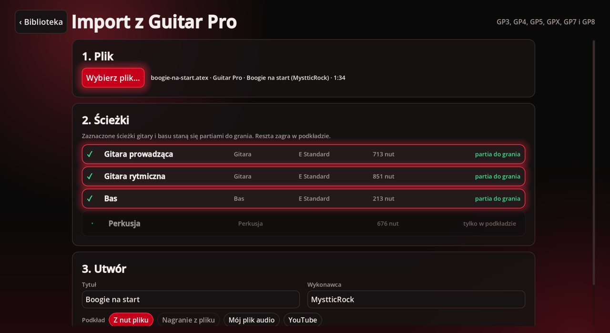

Plug in your guitar and the notes fly down a 3D neck in time with the music. The game listens to every string and scores each note, chord and technique as you play.
Free, for Windows. The game speaks Polish.

Latest release: checking…
A shortcut in the Start menu and an entry in the system uninstall list. It installs for your own account, so it never asks for an administrator password, and a newer release installs over the older one.
Download installer
Unpack it anywhere and run MystticRock.exe. Settings,
calibration and songs go to your user folders, the same as with the
installer.
The complete source of this release under the GPL-3.0 licence, with the ASIO SDK it was built with. You don't need it to play.
Download sourceNeeds Windows 10 or 11 (64-bit) and a way to get the guitar into the computer: the Rocksmith Real Tone cable or any audio interface. The installer is not signed with a certificate, so SmartScreen shows “Windows protected your PC”. Choose “More info”, then “Run anyway”. On the first start the Konfigurator walks you through the input, your instrument, tuning and latency; the video below shows every step.
The rhythm game you know from Rocksmith, written from scratch: your own instrument, live scoring and songs you bring yourself.
Notes, chords and techniques fly toward you on a neck like on stage, with the song's sections, a metronome and a left-handed mode. Press T and the same song turns into tablature with its rhythm.
Pitch, chords and techniques are scored live: slides, bends, mutes, harmonics, tremolo and legato. Three judging levels, then stars, how steady your timing was and your records.
The Rocksmith Real Tone cable is found by itself, or use any audio interface. WASAPI exclusive and ASIO get to about 16 ms from the string to your headphones.
Neural Amp Modeler profiles and cabinets, pedals with knobs, four slots under the keys 1 to 4, and a tone that follows the song when its pack has one.
GP3 to GP8 files become playable songs, with the backing played from the notes, your own recording matched to the notes, or a YouTube video playing next to the neck.
From 4 to 8 strings, any tuning, left or right hand. The library tells you which songs fit your instrument and which need retuning.
Eight songs come with the game, all written for it: a first riff,
a techniques workout, punk, rock and roll, heavy metal, a ballad,
Beethoven's Ode to Joy and a riff played over a YouTube video. Songs are
open .feedpak packages: drop one on the library and it is in.
Recorded straight from the game, without any staging.






No account, no telemetry, no ads. The game goes online only for YouTube: to check a link in the import and to play a video next to the neck.
Settings, calibration and records stay on your computer and survive
an update or a reinstall. Your songs live in
Documents\MystticRock\Utwory.
The game brings no commercial music. What you import from Guitar Pro, with your recordings, stays in your own library.